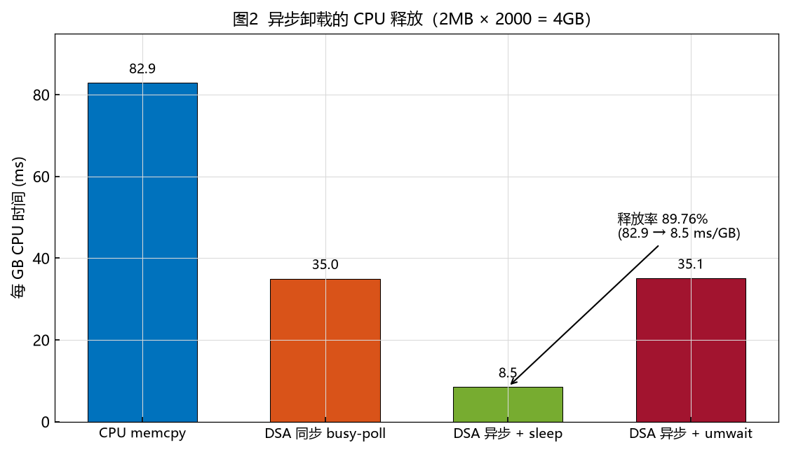
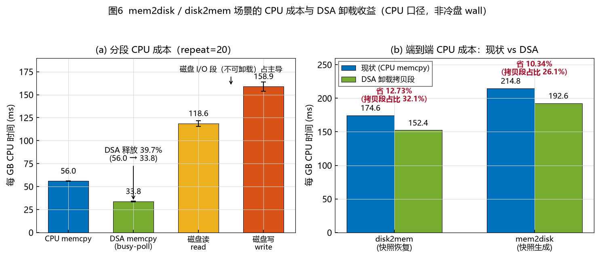

性能验证 · 三场景
mem2mem / mem2disk / disk2mem 搬运链路 CPU 成本实测 · Intel Xeon 8480+ · Intel DML
Contents · 目录
快照搬运在占用 vCPU，DSA 能否卸载？
纯内存拷贝，DSA 能力上限（省 39.7%+）。
真实快照链路，端到端省 10% ~ 13%。
收益上限被磁盘 I/O 锁死；端到端待验证。
背景 · 问题
场景一 · mem2mem
不含磁盘 I/O，DSA 能省多少就给多少——这是理论上限。
场景一 · mem2mem

关键前提：必须 batch 攒批 + 异步提交。同步 busy-poll 只省 CPU 时间（-39.7%），不真正让出核。
这是 能力上限；真实快照链路含磁盘 I/O，达不到这么高。
场景二/三 · 真实快照链路
含磁盘 read/write，DSA 只能卸载其中的「内存拷贝段」。
场景二/三 · 核心成果

disk2mem（恢复）：174.6 → 152.4 -12.73%
mem2disk（生成）：214.8 → 192.6 -10.34%
重复 20 次，各段 stddev/avg < 4%，数据可信。
机制 · 为什么只有 10%~13%
| 分段 | 每 GB CPU (ms) | 性质 |
|---|---|---|
| CPU memcpy（现状拷贝段） | 56.0 | DSA 可卸载 |
| DSA memcpy（busy-poll） | 33.8 | 卸载后 -39.7% |
| 磁盘读 read（disk2mem 段） | 118.6 | 不可卸载 |
| 磁盘写 write（mem2disk 段） | 158.9 | 不可卸载 |
结论 · 前提
DSA 卸载搬运：拷贝段省 39.7%，端到端省 10% ~ 13%，端到端验证进行中